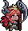
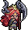
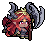
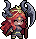
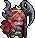
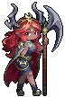

Goblin Priest
<哥布林祭司>
ID: M14202_000 · Standard counterpart: M14202 · Alter Theme: 梦魇 / Nightmare · Source: 常驻 / Permanent · Step: A · Weight: 100 · CharacterRole: 辅助 / Support
Animated






Still
Thuộc tính (Class · Type · Element · Terrain)
| Class | Type | Element | Terrain |
|---|---|---|---|
| Priest (牧师) | Spirit (生灵) | Dark (暗系) | Plains (平原) |
Race name (used for talent filter):
魔族 / Demonic(race name魔族≠ Type race-family生灵).
Codex (Insight)
梦境编织 / Dreams Weaving (XD13001_060)
| Field | Value |
|---|---|
| Step | A |
| Type | 专属 / Unique |
| Race lock | 神灵 |
| Element/Class lock | 不限 |
| MaxLevel | 3 |
| Effect (canonical CN / EN, base value at L1) | 造成恐惧层数+1。 / Apply 1 more stack of Fear. |
| SpecifyRoleIDs | M14202_000 |
| Description | — |
Effect text is L1 base value. Higher levels usually scale linearly; verify in-game.
Stats
Base Stats (L1, no modifiers)
| Stat | Priest | Dark | Spirit | Plains | A | Base L1 |
|---|---|---|---|---|---|---|
| HP | 4 | 0 | 0 | 0 | 4 | 8 |
| STR | 0 | 2 | 0 | 2 | 0 | 4 |
| SPI | 0 | 0 | 0 | 0 | 0 | 0 |
| AGI | 0 | 0 | 2 | 2 | 0 | 4 |
| SPD | 6 | 2 | 2 | 2 | 4 | 16 |
| Toughness | 10 | 2 | 0 | 0 | 4 | 16 |
| LUK | 0 | 0 | 0 | 0 | 0 | 0 (only from gear / Lucky-Streak talent) |
| Starting Mana | — | — | — | — | — | 0 (game default) |
| Max Mana | — | — | — | — | — | 30 (game default) |
Sum of 5 axes from
BasicAttrDataTablefiltered byType='职业'/'元素'/'种族'/'地型'/'位阶'. HP/STR/SPI/AGI don't have keyword pages so labels stay plain.
Combat-stat mapping (Priest class): TBD — only Mage mapping (ATK←SPI · DEF←AGI · Weakness←STR) is verified. For other classes, the in-game ATK/DEF/Weakness columns map onto raw stats but the exact triple needs in-game datapoint verification.
| Pool | Priest | Dark | Spirit | Plains | A | Sum | → Adds to |
|---|---|---|---|---|---|---|---|
| initialAttack | 10 | 2 | 2 | 2 | 4 | 20 | TBD |
| initialDefence | 0 | 0 | 0 | 0 | 0 | 0 | TBD |
| initialWeak | 0 | 0 | 0 | 0 | 0 | 0 | TBD |
→ L1 displayed stats (raw + class combat-mapping): - Raw: HP 8 · STR 4 · SPI 0 · AGI 4 · SPD 16 · Toughness 16 · LUK 0 · Mana 10/30 - (Combat pools — Attack: 20, Defence: 0, Weak: 0 — fold into the mapped raw stat once class mapping is verified.)
Higher-level stats = base + level growth + Insight + passive/talent modifiers + gear. Growth formula per
BasicAttrDataTable.GrowthType1..10(cycle of 10) — exact application rule TBD pending in-game datapoint verification.
Skill (Active)
恐惧咒语 / Fear Curse (UniqueDataTable.M14202_000)
| Field | Value |
|---|---|
| SkillType | 辅助 / Support |
| TargetType | 敌方 / Enemy |
| Target | 全体目标 / All Targets |
| MaxTarget | 3 |
| Times | 1 |
| Value | 5 |
| StatusLayer | 4 |
| ExtraValue1/2/3 | 0 / 0 / 0 |
| ActionType | 特殊攻击 / Special Attack |
Effect:
哥布林祭司释放猎物内心的恐惧，对敌方全体目标目标造成5点伤害，并对目标造成4层恐惧。
Unleashes the prey's inner fear. Deals 5 DMG to all enemies and applies 4 stacks of Fear.
Attack (Normal Attack)
普通治疗 / Basic Heal (BD30301) — UnlockStar 1
优先使友方受伤最多目标恢复1点生命。
Restore 1 HP to the ally with most damage taken.
(Value0=1.)
Race
魔族 / Demonic (BD20501) — UnlockStar 2
造成伤害后使目标失去4点韧性。
Target loses 4 Toughness after dealing DMG.
(Value0=4.)
Trait
从心 / Fickle (BD10401_000) — UnlockStar 3
【获得】造成恐惧后使自身获得1点魔力。
[Gain] Gain 1 Mana after applying Fear.
(Value0=1.)
Title
不详者 / Omen (BD51049) — UnlockStar 4
【减益】受到攻击后对目标造成2层恐惧。
[Debuff] Apply 2 stacks of Fear to attacker after taking a hit.
(Value0=2.)
Perk
恐惧诅咒 / Terror Curse (BD40915_000) — UnlockStar 5
【减益】行动开始前对敌方全体目标造成3层恐惧。
[Debuff] Apply 3 stacks of Fear to all enemies at action start.
(Value0=3.)
Level-up Materials
| Slot | CN | EN |
|---|---|---|
| 1 | 魔力结晶 | Mana Crystal |
| 2 | 圆木 | Log |
| 3 | 孢子菇 | Spore Shroom |
| 4 | 翠玉菜 | Jade Greens |
Talents
Talent unlocks ở 5★, dùng 天赋果实 / Talent Fruit để mở + reroll. Pool eligible cho unit này = 100 total = 1 exclusive + 10 race + 21 class + 10 element + 58 generic.
Format: Effect column = canonical
TalentDataTable.Effect_ENwith highest-tier values filled (bold).Tierscolumn lists which tiers the talent has (e.g.CBAS,AS,S). Per-tier values in italic at end asValue0[/Value1[/Value2]]. Talent names are canonical fromName_EN— do NOT paraphrase.
Exclusive (1)
TF00014 — 恐惧汲取 / Fear Siphon (tiers: S) - Effect: 释放技能后每造成3层恐惧吸收目标1点生命。 - Drain 1 HP per 3 stacks of Fear applied after casting skill.
(per-tier values: S: 3/1)
Race-restricted: Demonic 魔族 (10 talents across 5 base IDs)
| Base ID | CN | EN | Tiers | Effect (highest-tier filled) & per-tier values |
|---|---|---|---|---|
| TF14301 | 吮吸生命 | Life Siphon | CBAS | Drain 4 HP after dealing DMG. (C: 1 · B: 2 · A: 3 · S: 4) |
| TF14302 | 天生邪恶 | Born Evil | AS | Deal +8 total DMG. (A: 4 · S: 8) |
| TF14303 | 不可名状 | Nameless | S | All enemies lose 20% Toughness at battle start and gain equal Max Toughness. (S: 20) |
| TF14304 | 邪能泯灭 | Evil Decay | AS | Apply +2 stacks of Decay. Effect increases by 4 to targets with Weakness exposed. (A: 1/2 · S: 2/4) |
| TF14305 | 深渊召唤 | Abyss Call | S | Lose 50% max HP at turn start, but gain 1 ally count for every 20 HP lost. (S: 50/20/1) |
Class-restricted: Priest 牧师 (21 talents across 10 base IDs)
| Base ID | CN | EN | Tiers | Effect (highest-tier filled) & per-tier values |
|---|---|---|---|---|
| TF10401 | 灵光一现 | Inspiration | S | Take 1 extra actions immediately after casting a skill, but total DMG dealt and HP restored is reduced by 50%. (S: 1/50) |
| TF10402 | 生命充盈 | Life Abundant | S | Gain 15% of overflow HP after healing. (S: 15) |
| TF10403 | 抗拒死亡 | Deny Death | S | Survive with 1 HP when taking fatal DMG for the first 2 times and take -20 total DMG this turn. (S: 2/1/20) |
| TF10404 | 神圣震击 | Holy Shock | AS | Nearest enemy loses 4 HP after the unit performs a basic heal, plus an additional 1 per 2 HP restored. (A: 2/4/1 · S: 4/2/1) |
| TF10405 | 纯净结界 | Pure Barrier | CBAS | All allies take -4 stacks of debuffs. (C: 1 · B: 2 · A: 3 · S: 4) |
| TF10406 | 无私奉献 | Selfless | AS | Lose 20% of current HP when using basic heals, increasing total HP restored to targets by the same amount. (A: 10 · S: 20) |
| TF10407 | 伤害分担 | Share Pain | AS | All allies take -4 total DMG, but the unit with the talent loses 2 HP when other allies take DMG. (A: 2/2 · S: 4/2) |
| TF10408 | 振奋之歌 | Uplifting Song | CBAS | All allies deal +4 total DMG. (C: 1 · B: 2 · A: 3 · S: 4) |
| TF10409 | 纹章大师 | Emblem Master | AS | Gain +4 all stats from Badge gear. Badge gear's Basic Bond level +2. (A: 2/1 · S: 4/2) |
| TF10410 | 神圣新星 | Holy Nova | AS | All allies gain 2 HP after casting skill. Effect increases by 1 per 50 SPI. (A: 1/100/1 · S: 2/50/1) |
Element-restricted: Dark 暗系 (10 talents across 6 base IDs)
| Base ID | CN | EN | Tiers | Effect (highest-tier filled) & per-tier values |
|---|---|---|---|---|
| TF11501 | 黑暗笼罩 | Dark Shroud | AS | Apply +2 stacks of Decay. Apply 2 stacks of Decay to all enemies at turn start. (A: 1/1 · S: 2/2) |
| TF11502 | 恐怖威压 | Terror Aura | AS | Apply +2 stacks of Fear. Enemies with Weakness exposed gain -8 Toughness. (A: 1/4 · S: 2/8) |
| TF11503 | 轮回不止 | Endless Cycle | S | Apply +1 stacks of Reversal. Apply +2 stacks of Reversal at turn start. (S: 1/2) |
| TF11504 | 药剂研发 | Potion Craft | AS | Apply +2 stacks of Hinder. Inflict +1 HP Loss per 30 stacks of Hinder applied. (A: 1/60/1 · S: 2/30/1) |
| TF11505 | 如影随形 | Shadow Follow | AS | Apply +2 Taunt stacks. Deal +1 Follow-Up DMG per 40 stacks of Taunt on target. (A: 1/80/1 · S: 2/40/1) |
| TF11506 | 阴影潜行 | Shadow Lurk | S | Immune to 5 instances of DMG. (S: 5) |
Generic (no restriction) (58 talents across 19 base IDs)
| Base ID | CN | EN | Tiers | Effect (highest-tier filled) & per-tier values |
|---|---|---|---|---|
| TF10001 | 强而有力 | Strong | CBAS | +16 STR. Effect doubles if STR is at least 100. (C: 4/100 · B: 8/100 · A: 12/100 · S: 16/100) |
| TF10002 | 头脑清晰 | Clear Mind | CBAS | +16 SPI. Effect doubles if SPI is at least 100. (C: 4/100 · B: 8/100 · A: 12/100 · S: 16/100) |
| TF10003 | 反应迅速 | Quick Reflexes | CBAS | +16 AGI. Effect doubles if AGI is at least 100. (C: 4/100 · B: 8/100 · A: 12/100 · S: 16/100) |
| TF10004 | 身材紧实 | Fit Body | CBAS | +16 HP. Effect doubles if HP is at least 100. (C: 4/100 · B: 8/100 · A: 12/100 · S: 16/100) |
| TF10005 | 意志强韧 | Strong Will | CBAS | +16 Toughness. Effect doubles if Toughness is at least 100. (C: 4/100 · B: 8/100 · A: 12/100 · S: 16/100) |
| TF10006 | 四肢灵活 | Nimble Limbs | CBAS | +16 SPD. Effect doubles if SPD is at least 100. (C: 4/100 · B: 8/100 · A: 12/100 · S: 16/100) |
| TF10007 | 严阵以待 | Battle Ready | CBAS | Take -12 total DMG when in front position. (C: 3 · B: 6 · A: 9 · S: 12) |
| TF10008 | 好运连连 | Lucky Streak | CBAS | +8 Luck. Effect doubles if Luck is at least 50. (C: 2/50 · B: 4/50 · A: 6/50 · S: 8/50) |
| TF10009 | 核心位置 | Core Position | CBAS | Deal +8 total DMG when in mid position. (C: 2 · B: 4 · A: 6 · S: 8) |
| TF10010 | 玻璃大炮 | Glass Cannon | CBAS | Deal +12 total DMG but take +5 total DMG when in back position. (C: 3/5 · B: 6/5 · A: 9/5 · S: 12/5) |
| TF10011 | 魔力爆发 | Mana Surge | CB | Gain 30 Mana at turn 2 start. (C: 4/30 · B: 2/30) |
| TF10012 | 生命重组 | Life Rebuild | CB | Gain 100 HP at turn 2 start. (C: 4/100 · B: 2/100) |
| TF10013 | 意识重塑 | Mind Reshape | CB | Gain 100 Toughness at turn 2 start. (C: 4/100 · B: 2/100) |
| TF10014 | 谋而后动 | Think First | AS | Cannot act on turn 1 but gain +8 Action Mana on subsequent turns. (A: 4 · S: 8) |
| TF10015 | 调动情绪 | Mood Control | AS | Cannot act on turn 1 but gain +4 Hit Mana on subsequent turns. (A: 2 · S: 4) |
| TF10016 | 废物利用 | Scrap Use | AS | Gain +2 all stats per Bronze Bond. (A: 1 · S: 2) |
| TF10017 | 东拼西凑 | Patchwork | AS | Gain +2 all stats per Silver Bond. (A: 1 · S: 2) |
| TF10018 | 羁绊大师 | Bond Master | AS | Gain +2 all stats per Gold Bond. (A: 1 · S: 2) |
| TF10019 | 装备精通 | Gear Expert | AS | Gain +2 all stats from each Orange+ gear. (A: 1 · S: 2) |
Cross-references
- Active skill localization:
Activeskills_Name_M14202_000/Activeskills_Des_M14202_000 - In recruit pool:
SkinSummonDataTable.M14202_000 - Other relics targeting this unit:
XD13001_060